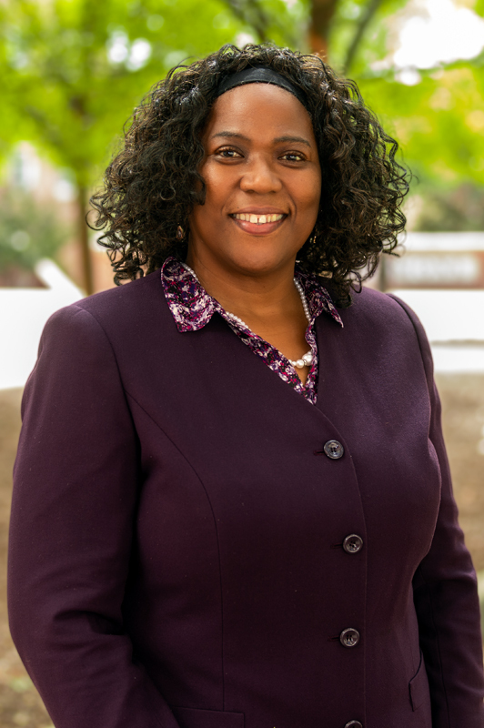

Last, First

Last, First

Professor
Computer Science and Software Engineering
Ph.D. Computer Science, Virginia Tech
M.S. Computer Science, Virginia Tech
M.S. Software Engineering, North Carolina A&T State University
B.S. Computer Science, Grambling State University
Latest in News
AI for good: Auburn faculty changing conversations about humanity, technology within community
Faculty from the Auburn University College of Liberal Arts and Samuel Ginn College of Engineering want to change the way we talk about artificial intelligence by drawing on their expertise in the arts, humanities and sciences.
Student in CSSE awarded Southern Regional Education Board Doctoral Scholars Program fellowship
Daniel Benjamin, a doctoral student in computer science and software engineering, is the department’s first Southern Regional Education Board Doctoral Scholars Program fellow.
Professor in CSSE spends summer equipping students, educators with evolving artificial intelligence toolkit
Cheryl Seals delivered multiple AI-related workshops and presentations at home and abroad as part of a growing effort to equip students, educators and entrepreneurs with the tools and confidence to meaningfully engage with AI.